Frozen ImageNet ResNet-18; four fixed COCO development examples. No captioner has been trained. Compare preprocessing, layers, and pooling. The eventual prefix length is 196 tokens; the layer remains undecided.
Read the figures: RMS shows activation magnitude, not semantic importance. PCA colors show three directions of variation, not object categories; colors are comparable within a layer only. Cosine similarity compares every pooled feature vector to the marked token; it is not attention or segmentation. Maps show spatial indices with overlapping receptive fields, not isolated image patches.
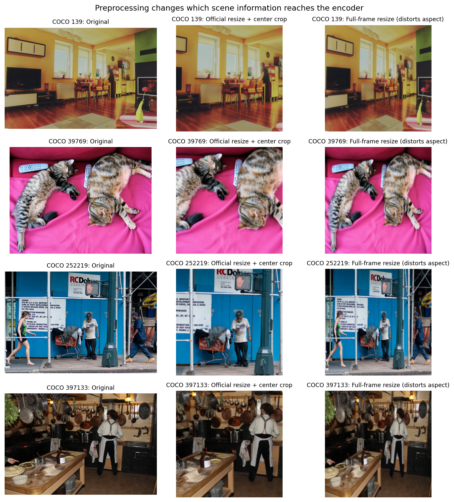
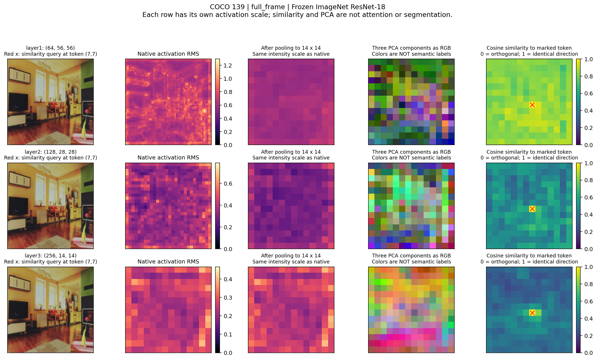
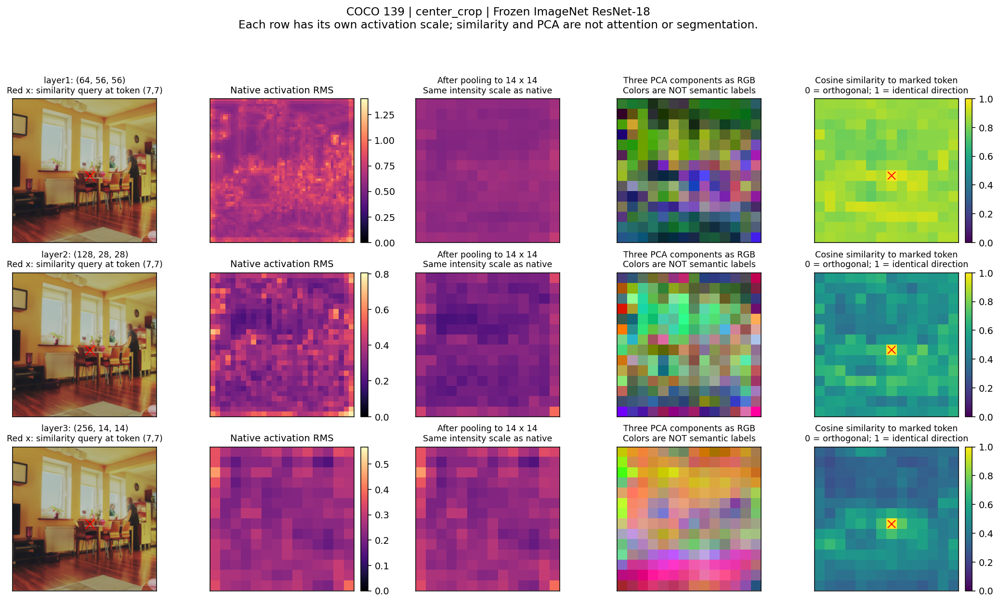
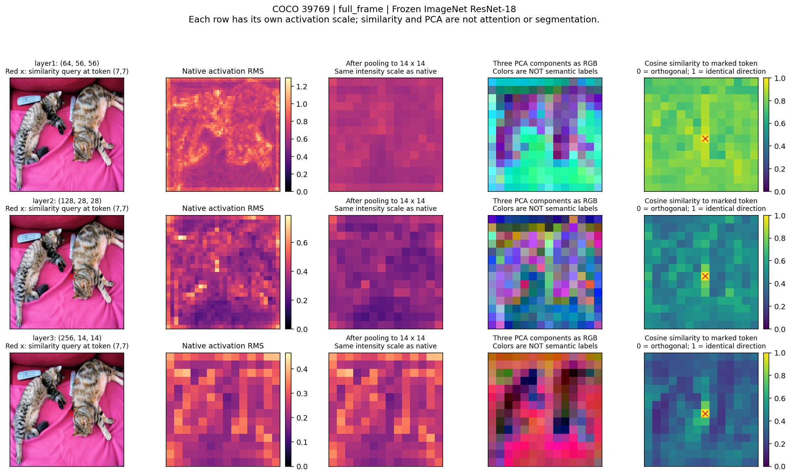
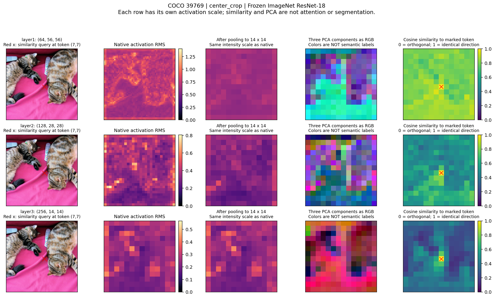
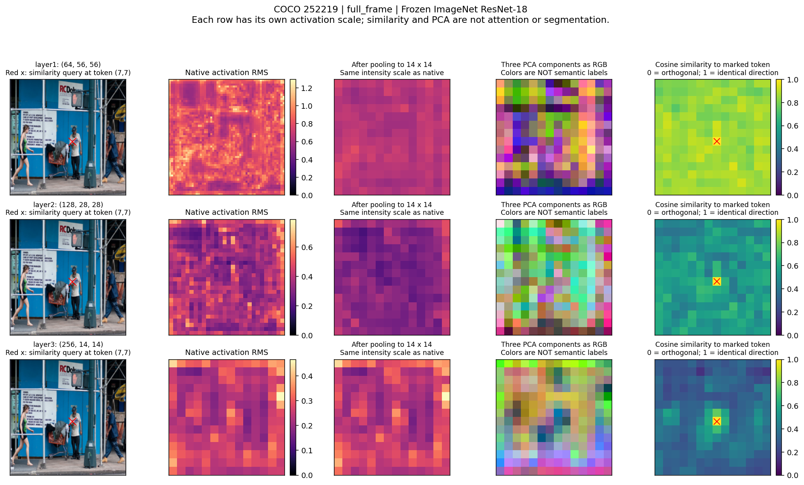
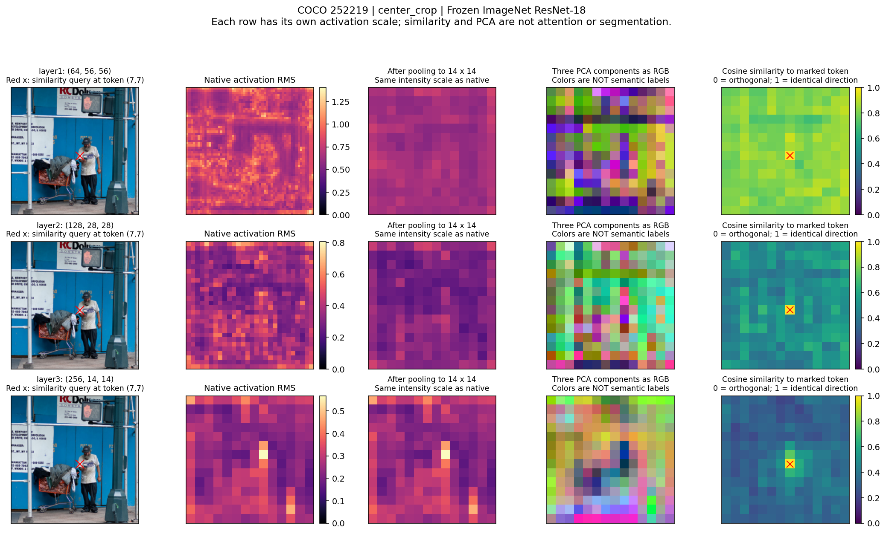
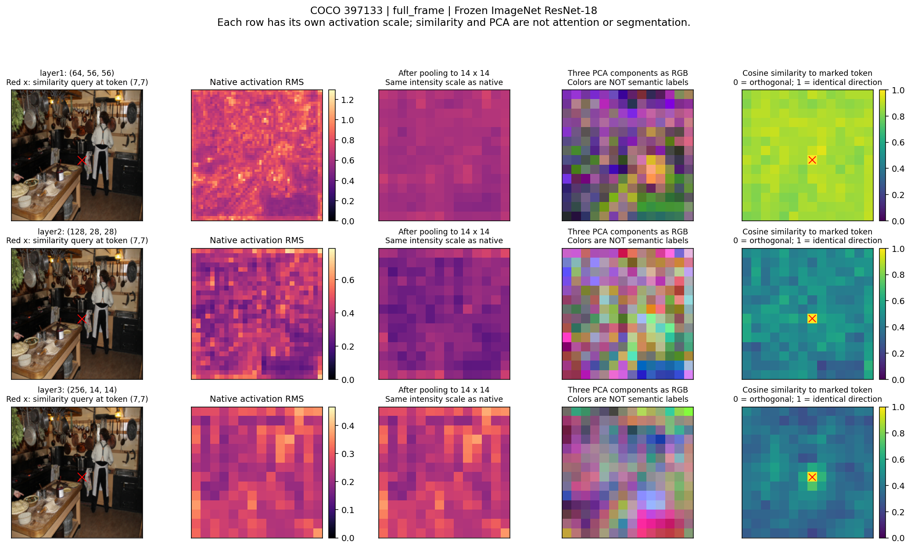
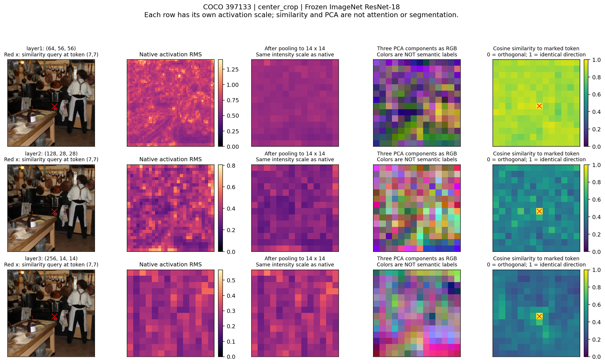
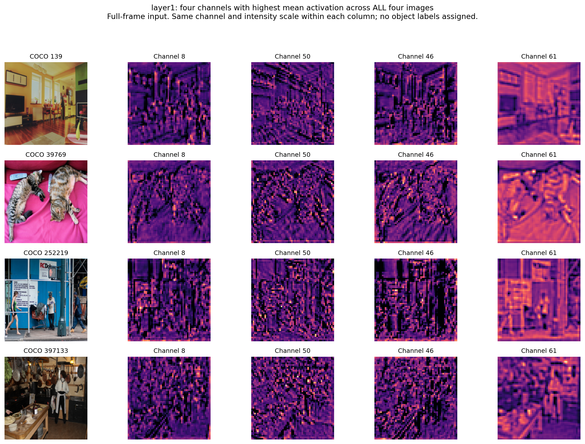
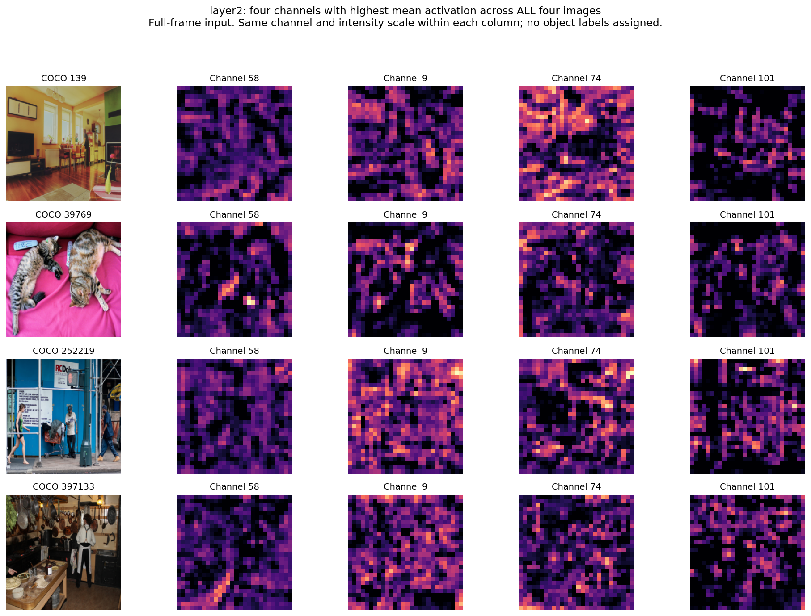
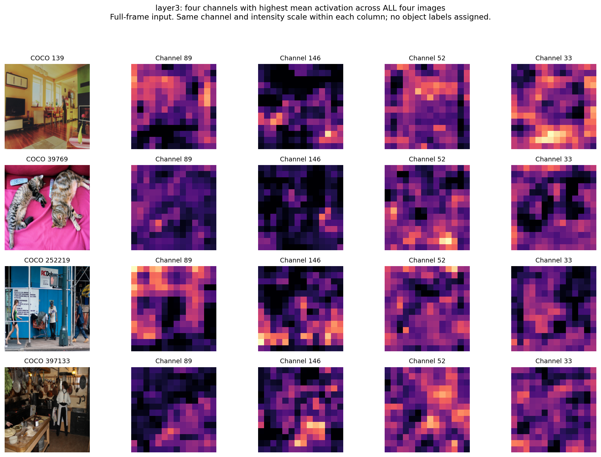
Which preprocessing preserves the objects and relationships of interest? Does pooling remove small spatial details? What remains distinguishable at each layer? These plots guide hypotheses; held-out semantic probes and controlled caption experiments must test them.
Full-frame resizing distorts geometry; center cropping removes content. Neither has been selected for training. Aspect-preserving padding is another possible follow-up, with its own boundary effects.
IDs, sources, checksums, versions, PCA basis, selection rules and timing. These inspection images must be excluded from the eventual held-out test set.